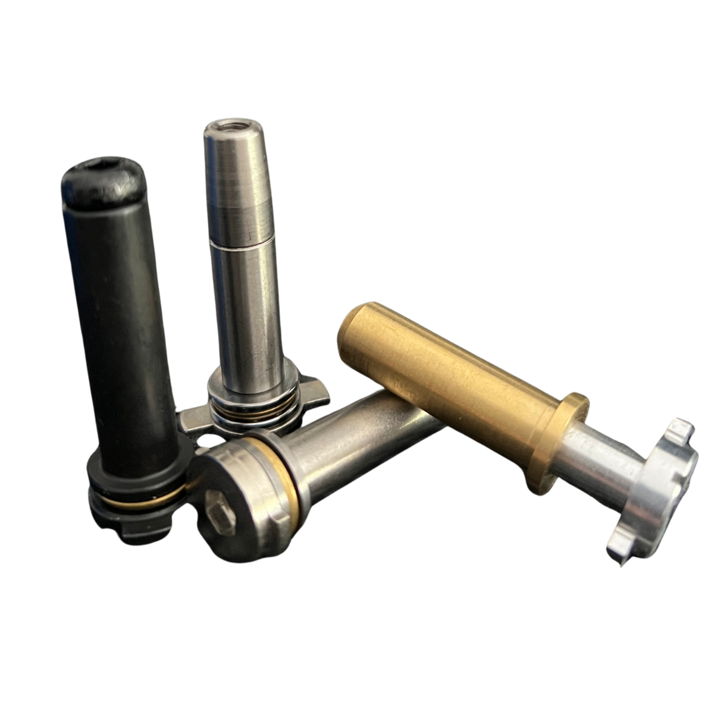

01
01
Cabeza de pistón
Ayuda a estabilizar el comportamiento del conjunto de compresión y a mejorar el aprovechamiento del aire.
Entrega de energía más estable.
O'Clock AirsoftO'Clock Airsoft · Configuración DMR
Consistencia y control para configuraciones de largo alcance.
Una preparación pensada para plataformas que necesitan estabilidad, eficiencia neumática y comportamiento repetible con bola pesada.
Advertencia técnica
Una configuración DMR mal planteada puede ser inestable, ineficiente o poco fiable. El rendimiento real depende del conjunto, no solo de los julios.
Consistencia con bola pesada
La bola pesada exige estabilidad, buen sellado, volumen de aire coherente y un sistema que entregue energía de forma repetible.

Sistema neumático
En DMR, la relación entre cilindro, cañón, cabeza de pistón, nozzle y cámara es clave para lograr un comportamiento estable.
Componentes y ajustes del pack
La selección se orienta a consistencia, sellado, estabilidad de disparo y compatibilidad con configuraciones de mayor exigencia.
01
Ayuda a estabilizar el comportamiento del conjunto de compresión y a mejorar el aprovechamiento del aire.
Entrega de energía más estable. 02
02
Trabaja con nozzle y cabeza de pistón para mejorar el sellado interno y la estabilidad del flujo de aire.
Transferencia de aire más consistente. 03
03
Cilindro de una sola pieza pensado para mejorar la estabilidad del conjunto neumático y favorecer una entrega de aire más coherente en configuraciones DMR.
Mayor estabilidad neumática y mejor aprovechamiento del volumen de aire.
04Aporta estabilidad al muelle y ayuda a mantener un ciclo más ordenado y repetible en configuraciones de mayor exigencia.
Movimiento interno más controlado. 05
05
Seleccionado según configuración para trabajar con estabilidad, resistencia y compatibilidad en montajes orientados a consistencia.
Base mecánica más sólida y repetible. 06
06
Selección entre SHS, Saigo CNC, Pandora o Titanium Series aligerados, priorizando fiabilidad, suavidad de ciclo y compatibilidad con configuraciones de mayor exigencia.
Transmisión fiable y ciclo más estable. 07
07
Sistema electrónico avanzado para controlar el disparo y ajustar el comportamiento de la réplica dentro de una plataforma DMR estable.
Control del disparo más preciso. 08
08
Revisión del conjunto interno para asegurar que compresión, transmisión, alimentación y respuesta trabajan de forma coherente.
Menos montaje sin criterio, más ajuste real.Pruebas y criterio de taller
El comportamiento debe revisarse con la bola real, el uso previsto y los límites del campo.
Lo que notas en campo
El conjunto busca reducir variaciones que afecten al disparo repetible.
Volumen de aire, sellado y compresión se plantean para trabajar de forma coherente.
La preparación se centra en que la plataforma se comporte igual disparo tras disparo.
Una configuración DMR seria debe sentirse estable, no forzada.
Compatibilidad y límites
La base, gearbox, cañón, cámara, normativa del campo y uso real condicionan si una configuración DMR tiene sentido.
Consulta técnica
Cuéntanos tu base, gramaje, límite de campo y objetivo de alcance. Te orientamos antes de montar piezas sin sentido.
O'Clock Airsoft
Cuéntanos tu base, gramaje, límite de campo y objetivo de alcance. Te orientamos antes de montar piezas sin sentido.
Consultar Pack DMR